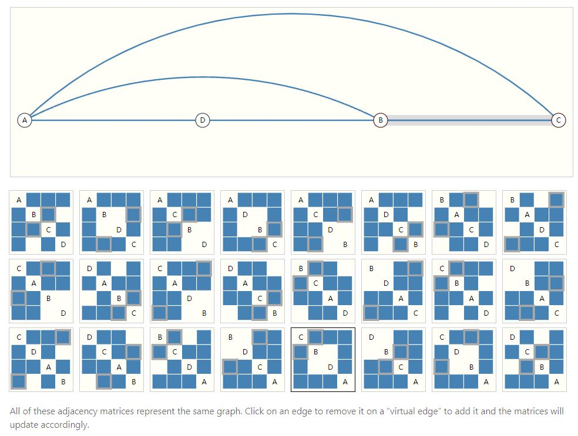
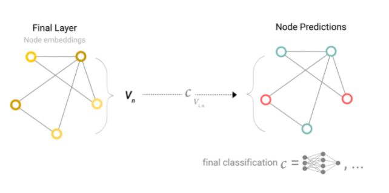

A Gentle Introduction to Graph Neural Networks
A Gentle Introduction to Graph Neural Networks
论文链接
·解读：上图中Layer3到Layer0层次依次升高，高层的某个结点依赖于一些低层结点计算而来。在网站上点击某结点，可查看该结点对低层结点的依赖关系。
一、文章架构
1.适合表示为图的数据类型。
2.图与其他数据类型的不同之处，以及使用图的一些专用的选择。
3.建立现代GNN，遍历模型的每个部分，从基本骨架实现到SOTA图神经网络。
4.提供GNN playground。
二、图
1.图的属性
·结点属性：结点身份、邻居个数等。
·边属性及方向：边身份、边权重等。
·全局属性：结点数、最长路径等。
2.图的表示
·结点属性嵌入表示
·边属性嵌入表示
·全局属性嵌入表示
3.图举例
（1）图片表示为图
·每个像素点映射到图中一个结点，并按照行号和列号进行唯一确定。
·各像素结点及其\(8\)-邻域结点以边相连。
·上图邻接矩阵的蓝色点表示两个像素结点有边相连。
（2）文本表示为图
·各词元分别对应于图中一个结点，上一词元与下一词元之间存在有向边。
（3）分子图
·原子表示为图中结点，化学键对应于图中各边。
（4）社交网络图
（5）引用图
（6）常见图的规模

三、具有图结构的问题
1.问题分类
·图级别(graph-level)：预测一整张图的某些性质。
·结点级别(node-level)：对于图中各个结点，分别预测它们的性质。
·边级别(edge-level)：预测图中边的存在性或边的某些性质。
2.图级别(graph-level)任务
（1）目标
·预测整个图的性质。
（2）举例
·给定一个分子图，预测它是否会跟配体进行对接。
·给定一个分子图，预测其气味。
（3）类比
·文本情感分析：给定一整个文本序列，分析文本情感类型。
·图像分类：给定一整张图像，分析其类别。
3.结点级别(node-level)任务
（1）目标
·预测图中各结点的性质。
（2）举例——Zach’s Karate Club
·教练、管理员之间的争执导致了空手道俱乐部的分裂。
·节点代表俱乐部成员。
·边代表这些成员在空手道之外的互动关系。
·预测问题：预测给定成员在争执之后会支持教练还是管理员。
·此时，成员的标签与成员结点到教练、管理员的距离高度相关。
（3）类比
·图像分割：尝试对图像中每个像素点进行标注。
·文本词性预测：给定一个与子，预测各个词汇的词性。
4.边级别(edge-level)任务
（1）目标
·预测图中各边的性质。
（2）举例——图像场景理解
·任务目标：识别场景中的物体，并预测各物体之间的关系。
·图像中的物体用结点表示，则物体关系预测可以转化为结点的邻接性，以及边的属性预测。
四、神经网络与图的兼容性挑战
1.图信息表示的挑战
（1）图中四种常见信息
·结点、边、全局信息和连通性。
（2）结点、边和全局信息易于表示
·表示方法：使用特征矩阵。
（3）连通性(connectivity)表示的挑战
①邻接矩阵表示法——最显然但存在问题的选择
·结点数量可能高达数百万，且边数是高度变化的，通常导致邻接矩阵极其稀疏。
·极其稀疏的邻接矩阵：空间效率低下。
·同样的连通性(connectivity)可由许多个邻接矩阵表示，不保证排列不变性（即输入表示同一connectivity的不同邻接矩阵，输出结果相同）

②邻接表——一种优雅、内存高效的稀疏矩阵表示方法
·使用元组\((i, j)\)表示结点\(n_i, n_j\)的连通性\(e_k\)。
·边数远远少于邻接矩阵的元素个数\(n_{nodes}^2\)，避开图中不连通部分的存储与计算。
·图中每个属性分别使用一个向量进行表示。
五、图神经网络
1.图神经网络定义
·GNN是对图中所有属性（结点、边、全局信息）的变换，这种变换保持图对称性（排列不变性）。
2.消息传递神经网络
·graph in, graph out结构：对图中结点、边、全局属性的嵌入表示进行变换，不改变图的连通性。
3.最简单的图神经网络
（1）特点
·可以学习边、结点、全局属性的新的嵌入表示，但不使用图的连通性。
（2）结构
·对于图的每一个部分（结点、边、全局信息），分别使用多层MLP，学习其嵌入表示。
4.通过汇聚信息(Pooling Information)进行预测
（1）举例——二分类
·任务目标：针对结点进行二元预测。
·解决方法：对于每一个结点的嵌入表示，分别应用同一个线性分类器。

（2）汇聚(Pooling)
①对结点分类的作用：
汇聚边信息，以用于结点预测。
②步骤
·将所有待汇聚的嵌入表示进行连接，形成矩阵。
·对嵌入表示进行聚合，通常使用求和操作。
·各结点分别使用自己的邻接边进行汇聚，不使用非邻接边。
（3）最简单GNN的问题
·尚未使用图的连通信息，独立处理各结点的嵌入表示，直到汇聚时才将它们连接在一起，导致图的结构信息（连通信息）利用不充分。
六、图中各部分之间的消息传递
1.基本思想
·在GNN层的内部使用汇聚技术，可以使得学到的嵌入表示对图的连通性有所感知。
2.消息传递
（1）含义
邻接结点或边之间进行信息交换，互相影响更新后的嵌入表示。
（2）步骤
·对于图中每个结点，集合所有相邻结点的嵌入表示（消息）。
·通过聚合函数（如：求和函数），对所有消息进行聚合。
·汇聚信息通过更新函数，更新函数通常是一个经过训练的神经网络。
（3）理解
·图神经网络的消息传递机制和图像卷积操作有相似之处，作用都是对元素的邻域信息进行聚合与处理，以更新元素的值。
·图中的一个“元素”就是一个结点；图像中的一个元素就是一个像素点。
·图中结点的邻居个数可变，图像像素点的邻居个数不变。

七、学习边的表示
1.基本思想
·汇聚各邻接边的嵌入表示信息，以更新某结点的嵌入表示。
·由于边和结点的嵌入表示维度可能不同，因此需要将边的嵌入表示空间映射到结点的嵌入表示空间。
2.更新顺序
·模型需要利用边信息更新结点信息，以及利用结点信息更新边信息。
·先更新结点信息还是先更新边的信息是两个不同的选择。
3.weave层
·结点到结点（线性）
·边到边（线性）
·结点到边（边层）
·边到结点（结点层）
八、添加全局表示
1.GNN的一个缺点
·远距离结点可能无法有效地进行信息传递。
·对于一个结点，若共有\(k\)层，则消息至多传递\(k\)步。
·若预测任务依赖于远距离的结点/结点组，则低效的消息传递可能导致模型性能较差。
2.解决方法
（1）虚拟边(virtual edge)
·任意两个结点可以直接进行消息传递。
·适用于小型图，如分子图；但对于大型图而言，会大幅度增加计算开销。
（2）主结点(master node)/环境向量(context vector)
·与所有结点、边进行连接。
·将边信息汇聚给结点时，主结点信息也会被汇聚；将结点信息汇聚给边时，主结点信息也会被汇聚。
·作用：对图进行了更复杂、更丰富的表示。
3.理解
·邻接边信息、邻居结点信息和全局信息的汇聚，可以视为一种基于特征(feature-wise)的注意力机制。
九、GNN Playground调参经验总结
1.参数规模与模型表现
·参数规模增大能带来模型性能的提升。
·GNN是一种高效的模型，较小规模的参数就有可能产生高性能。
2.嵌入维度与模型表现
·提高嵌入维度，可以提高模型性能。
3.GNN层数与模型表现
·随着层数增加，模型的平均性能有提升的趋势。
·最佳模型并未含有最多的层数。
·随着层数增加，模型性能的下界有所下降。
·解释：具有更多层数的GNN将会在更大范围内进行信息广播，可能导致结点的表示在连续迭代中被“稀释(dilute)”。
4.聚合函数类型与模型性能
·求和函数对于平均性能有轻微的提升。
·三种聚合函数下，模型最高性能相当。
5.消息传递类型与模型性能

·越多的图属性参加消息传递，模型的平均性能越好。
·结点表示看上去比边表示重要。
6.进一步提升模型性能的改进方向
·更精致的图算法
·图本身（如何进行图的构建，使用额外架构或关系以进行充分利用）
·举例：为了使分子图的特征更丰富，可以在结点间添加额外的空间关系，添加化学键以外的边，或者添加子图之间的显式可学习关系。
十、与GNN相关的技术
1.其他类型的图
（1）多边图
·一对结点间可以连接多条边，分别用于模拟结点间的不同关联。
·GNN修改：对于每一种边的类型，分别使用不同类型的消息传递方式。
（2）nested/hypernode graph
·用于表示层次信息。
·GNN修改：分别学习不同级别的表示。
（3）hypergraph
·一条边可以用于连接多个顶点。
·GNN修改：识别结点的community，添加hyper-edge以连接community中的所有结点。

2.图中的采样与批量化(batching)
（1）参数更新的挑战
·由于图中结点、边数是可变的，因此batchsize不是常数，如何使用随机梯度下降法（要求常数batchsize）进行参数更新是一个挑战。
（2）图批量化基本思想
·采样获得子图，保持大图的重要性质。
·图采样操作高度依赖于上下文，涉及图中边和顶点的选取。
（3）采样方法——保留邻域结构
·随机采样固定数量的结点，形成结点集合\(V\)，之后添加与结点集合距离不超过\(k\)的结点以及相应的边。
·每个邻域可以视为一个独立的图，GNN可以在这些子图上训练。
·损失可以进行掩码处理，仅考虑结点集合\(V\)，原因是\(V\)邻域中每个结点的邻域信息都不完整。
（4）采样方法——随机游走
·随机选取单一结点\(v\)，扩展其邻域\(N\)，使得邻域中结点到\(v\)的距离不超过\(k\)。
·从邻域\(N\)中选取一个结点，针对该结点进行距离不超过\(k\)的邻域扩展。
·一直重复上述操作，直到获得足够数量的结点、边或子图。
3.归纳偏置(Inductive Bias)
·保持图的对称性（排列不变性）
4.汇聚操作比较
·没有总是最好的汇聚操作。
5.GCN(Graph Convolutional Network)对子图函数的近似
·GCN可以认为是有\(N\)个子图，对每个子图进行embedding计算。
6.边与图对偶
·结点与边的互相转化（对偶）可以用于GCN，即Dual-Primal Graph Convolutional Networks。
7.图卷积作为矩阵乘法 + 矩阵乘法与图中游走的关系
·图中进行卷积/随机游走，等价于使用图的邻接矩阵进行矩阵乘法。
8.图注意力网络
·图像卷积权重与位置相关，但图中不具有位置信息，因此权重不应该对位置敏感。
·可以在图神经网络中使用注意力机制。
9.图的可解释性
10.图的拓扑结构建模算法
·直接模拟邻接矩阵，类似于图像中的自动编码器。
·顺序化建图。